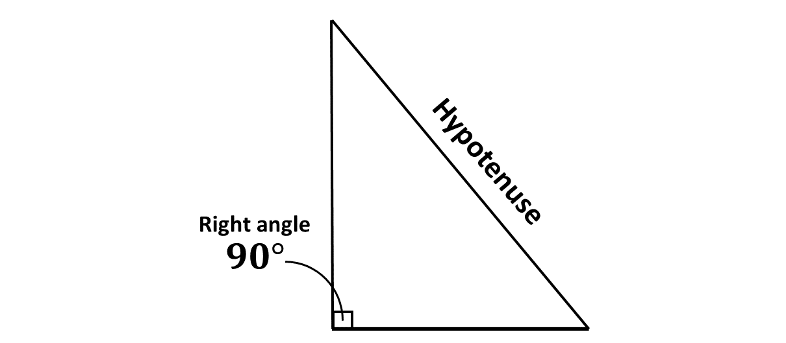
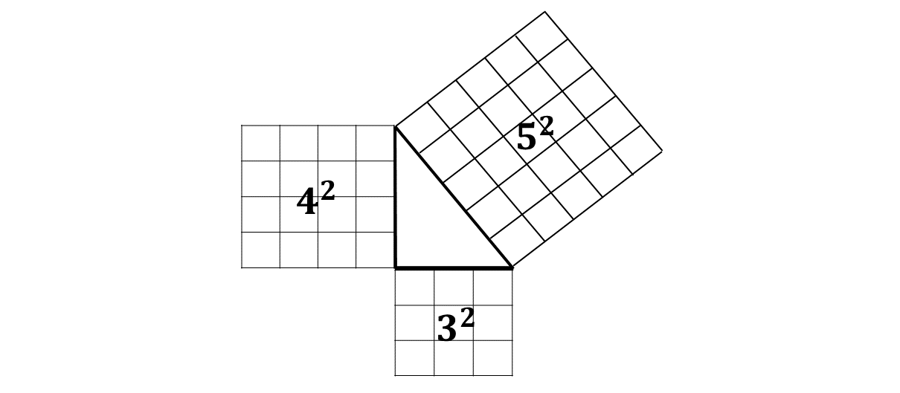

A right-angled triangle is a triangle that has one angle equal to 90°. In such a triangle, the side opposite the right angle is referred to as the hypotenuse, and it is always the longest side.
The other two sides are referred to as the legs of the triangle.
The relationship between the lengths of the sides of a right-angled triangle is given by a fundamental principle in Mathematics known as the Pythagorean Theorem. This theorem is named after the ancient Greek mathematician Pythagoras.
According to the Pythogorean Theorem, given any right-angled triangle, the square of the length of the hypotenuse is equal to the sum of the squares of the other two sides of the right-angled triangle.
This is illustrated in the diagram below:

That is, if '\(a\)' and '\(b\)' are the lengths of the legs of a right-angled triangle and '\(c\)' is the length of the hypotenuse: \[c^2 = a^2 + b^2\]
One common proof involves using the areas of squares constructed on each side of the triangle, as shown in the diagram below:

In the diagram above, it can be seen that, the sum of the squares created on the side of the legs of the right-angled triangle is equal to the side of the squares created on the hypotenuse. That is: \[3^2 + 4^2 = 5^2\]
Using the pythagoras theorem, we can find any of the sides when the other two sides are given.
Consider the examples below in the next section.
In this section, we will use the Pythagorean Theorem to solve question.
Example 1
A triangle has legs of 6 cm and 8 cm. Find the hypotenuse.
Solution
Example 2
The hypotenuse of a right-angled triangle is 13 m, and one leg is 5 m. Find the other leg.
Solution
Example 3
Verify if a triangle with sides 9 cm, 12 cm, and 15 cm is a right-angled triangle.
Solution
Example 4
A ladder is 10 m long and leans against a wall, with its base 6 m away from the wall. How high up the wall does the ladder reach?
Solution
Example 5
Find the length of the diagonal of a rectangle with sides 3 m and 4 m.
Solution
Example 6
A right-angled triangle has one leg of 7 cm and a hypotenuse of 25 cm. Find the other leg.
Solution
Example 7
A triangle has sides 5 m, 12 m, and 13 m. Prove it is a right-angled triangle using the Pythagorean Theorem.
Solution
Example 8
The diagonal of a square is 10 cm. Find the length of one side of the square.
Solution
Example 9
A kite is flying at a height of 24 m, and the string is anchored 7 m away horizontally from its base. Find the length of the string.
Solution
Example 10
A triangle has a hypotenuse of 17 cm and one leg of 15 cm. Find the other leg.
Solution
Solve the following:
-
A rectangular television screen measures 16 inches by 9 inches. Find the diagonal of the screen.
-
A car travels 6 km north and then 8 km east. How far is the car from its starting point?
-
A soccer field has dimensions 100 m by 70 m. Find the diagonal length of the field.
-
A wire is stretched from the top of a 12 m pole to a point on the ground 9 m away from the base of the pole. Find the length of the wire.
-
A triangular park has sides measuring 40 m, 50 m, and 30 m. Is it a right-angled triangle?
-
The hypotenuse of a right triangle is twice the length of one of its legs. The other leg is 6 cm. Find the lengths of all sides.
-
A right-angled triangle has sides \(x, x + 1\) and \(x+2\). Show whether this triangle satisfies the Pythagorean Theorem.
-
An isosceles triangle has equal sides, 6cm long and a base of 4cm long. Find the altitude of the triangle.
Test yourself on what you have learnt so far. Click on the link below when you are ready.
Kindly contact the administrator on 0208711375 for the link to the test.
For sponsorship or advertisement kindly call or whatsapp on 0208711375 or 0249969740.